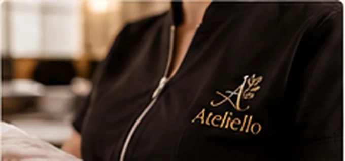

Início / Uniformes e bordados para beleza e estética
BELEZA QUE SE EXPRESSAO primeiro cuidado também está na apresentação.
Jalecos, túnicas, aventais, toalhinhas e uniformes personalizados para salões, profissionais da beleza, estética e bem-estar.
Montar um projeto ↗
A identidade de quem cuida pode ser delicada e profissional.
Um bordado discreto com nome ou logo valoriza a apresentação de profissionais autônomos, salões e clínicas de estética. As escolhas de tecido e modelo devem acompanhar o conforto, o uso frequente e a rotina de cada serviço.
Entenda tecidos e acabamentos ↗Possibilidades para você
- Jalecos e túnicas bordadas
- Aventais de salão
- Toalhas e toalhinhas personalizadas
- Camisas e polos de recepção
- Nome, monograma e logotipo
Cada peça está sujeita à disponibilidade e à avaliação de tecido, quantidade e desenho. A imagem de ambientação é apenas uma sugestão de aplicação.


Escolha o que deseja.
O cuidado é nosso.
Adicione peças, quantidades, tecidos e detalhes do bordado em um pedido organizado.
Solicitar orçamento ↗
Vamos cuidar dos detalhes.
Posso escolher a cor da linha?
Sim, a sugestão é feita considerando tecido, contraste e disponibilidade.
Dá para criar um kit de estreia?
Podemos avaliar uma combinação enxuta para quem está começando.
Vocês bordam em peça minha?
É possível solicitar análise do tecido, modelo e local de bordado.